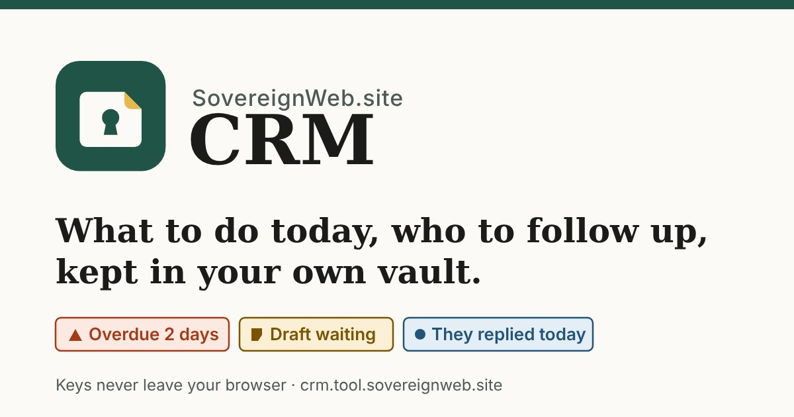

Brand
SovereignWeb.site CRM: the mark, the colours, the type
The mark is a kept card: a contact card with its corner turned down, as you fold one you mean to come back to, and a keyhole, because it lives in a vault only you hold the key to.
Mark and wordmark


Clear space round the mark: a quarter of its width. Never recolour the keyhole or put the mark on the demo band's yellow.
Colours
Each status colour always comes with a word and a shape, so nothing is said by colour alone. All text pairs pass WCAG AA on Paper, light and dark.
- Vault green
--vaultlight #1f5446 · dark #7cc4abThe brand, links, the main button, the open vault. - Paper
--paperlight #fbfaf7 · dark #121513The page. - Ink
--inklight #1b1c1a · dark #e9ece6Text. - Signal
--signallight #a63a17 · dark #f39a78Overdue, with a triangle. - Brass
--brasslight #7d5300 · dark #e7b84aA draft waiting, with a folded page. - Sky
--skylight #24537a · dark #93c1eaThey replied: waiting on us, with a dot. - Slate
--slatelight #4f5856 · dark #b9c2bfNo reply yet: waiting on them, with a ring. - Band
--bandlight #f3d36b · dark #e7b84aThe demo band only, with black hazard stripes.
Type
System fonts only, so nothing is fetched from anyone else (CSP 'self').
- Headings, the wordmark
- ui-serif, Charter, Iowan Old Style, Palatino, Georgia
- Everything else
- system-ui, -apple-system, Segoe UI, Roboto
- Keys, codes
ui-monospace, SF Mono, Menlo, Consolas- Numbers and dates
- tabular figures, so columns line up
Share card

1200 by 630, JPEG, from share-card.svg.

For crm.dev.a
The tokens are in brand.css (light and dark), with the demo band, the vault switcher and the status tags. Copy the four SVGs and the card into the app's own assets: nothing here is meant to be linked from another site.